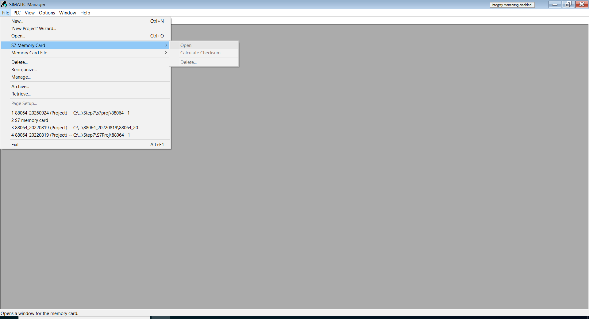
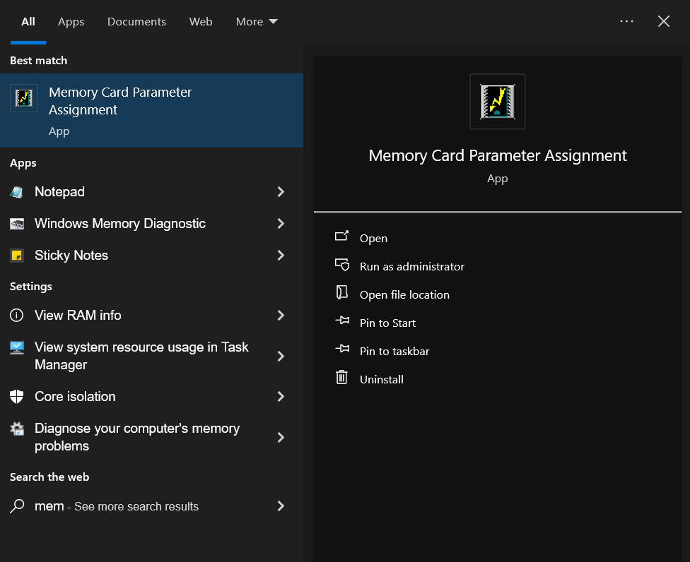
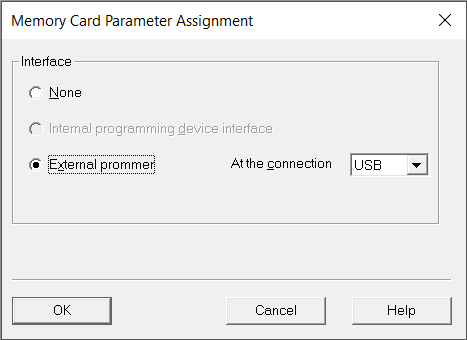
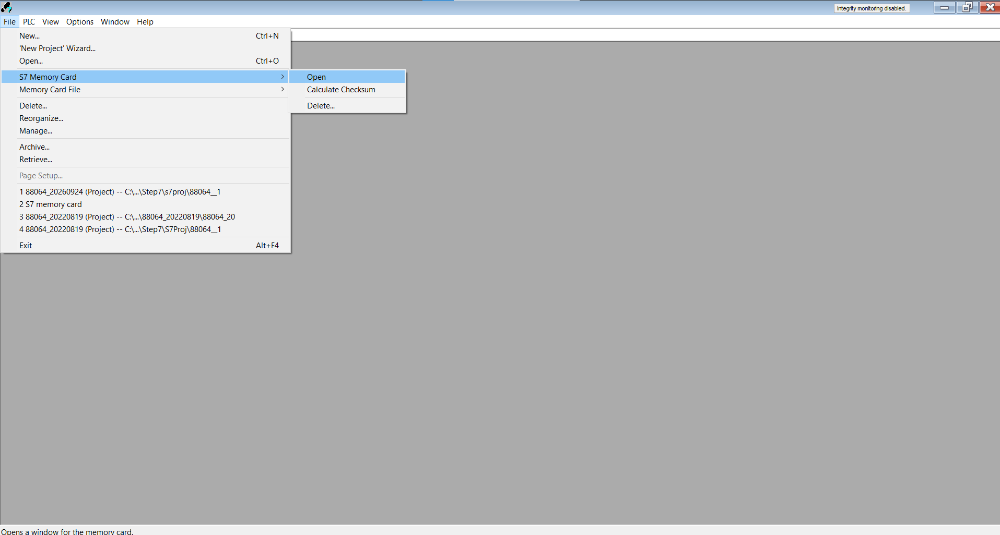
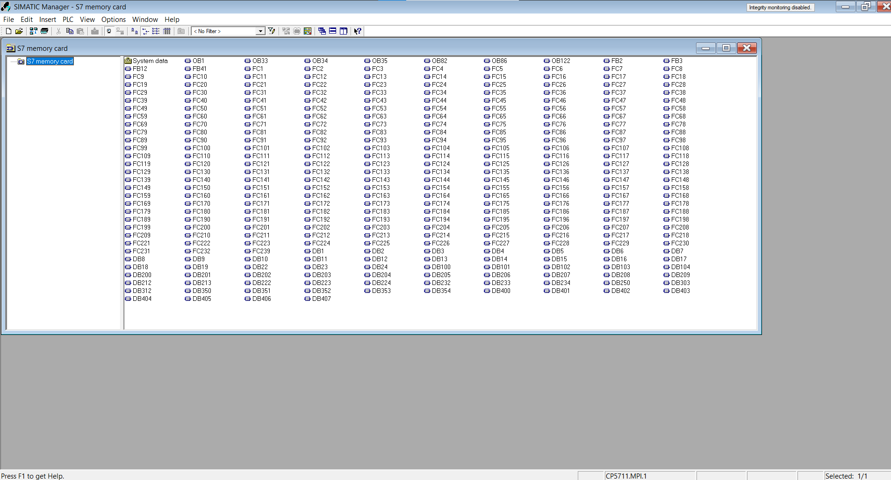

Passo 1
Inserção do cartão e verificação de status
Insira o cartão S7 no leitor de cartão e abra o software Simatic Manager.
Acesse no menu superior o caminho File > S7 Memory Card. Você notará que as opções do cartão estarão desabilitadas.

Passo 2
Configuração de parâmetros do leitor
Feche o Simatic Manager e abra o aplicativo Memory Card Parameter Assignment no seu computador.

Na janela de configuração, marque o check box External Prompt e selecione a opção USB na configuração At the connection. Em seguida, pressione OK.

Passo 3
Acesso e leitura dos dados do cartão
Abra o software Simatic Manager novamente.
Acesse novamente o caminho File > S7 Memory Card > Open. Note que agora as opções estão habilitadas.

Ao abrir o cartão, os dados contidos nele serão lidos e exibidos na interface do programa para manipulação.
